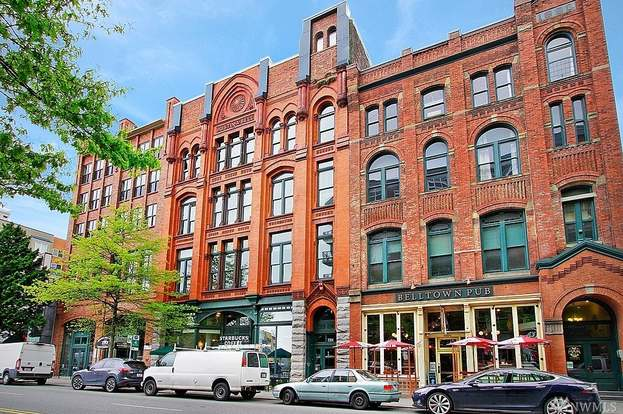

In The Seattle Aquarium stunning new ocean pavillion,marve at some 3,000 animals and plants native to the Coral Triangle, which encompasses the waters of Indonesia, the Philippines, and Malaysia. As you walk beneath the Pavillion, look up at the sea life through a giant oculus window. Accliamed Lummi glass artist Dan Friday designed three elements at the bug's entry, incg a brilliant school of 33 hand-blown glass salmon suspended from the ceiling. "The sotry of coast salish peopleis the story of the Salmon People" says Friday, touching on the inspiration beehind this dazzling work. "The Ocean Pavillion highlights the message of connectivity," says Emily Malone, Seattle Aquarium public relations specialist. "we have one ocean and the same issues impact marine life and ecosystems here at home and around the world."
As you continue up the shoreline, bike lanes and landscaping futher invite you into hip belltown and to explore the dynamic works of the Olympic Sculpture Park
"We're pleased to see the new bike paths, the Centennial Park/Myrtle Edwards Park revitalization, and the improvements along the old train tracks that have been supported by Melinda Gates," says Ian McClendon, general manager of historic EdgeWater Hotel with its beloved resturant, Six Seven. He adds that visitors this year can look foward to an expanded Sound Waves concert series "with some amazing bands coming through the hotel. And the Seafair Torchlight Parade will be happening on Alaskan Way ( on July 26)."
Dramatic Elevated park and pedestrain bridge boast a 360-degree panorama, thoughtful landscaping, ample seating, a cafe (planned to open in summer 2025) and kids' play elements. This impressive structure connects the rooftop of Seattles Aquarium's Ocean Pavilion to the outdoor terrace of Pike Place Market inviting Market Front bug. The Design of native Plantings by landscape architect and Muckleshoot n Tribe mmMember
This Striking Pier 62 offers seating, games, and free events,-from yoga to concerts to firepit socials- hosted by Friends of Waterfront Park and their community partners.